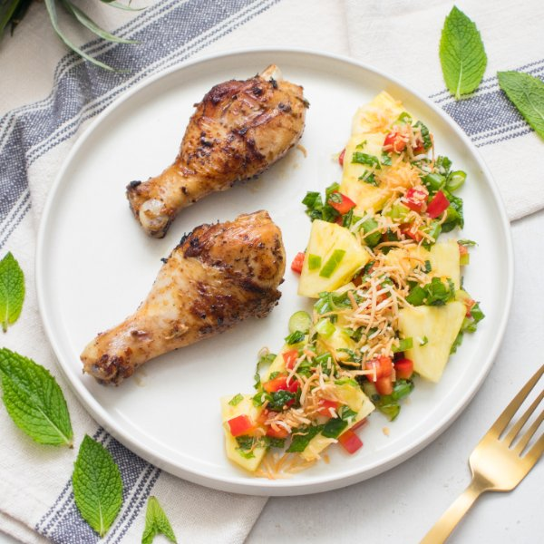

Jerk Chicken Drumsticks with Sweet & Savory Piña Colada Salad

Total Time
35 min
Nutrition (per serving)
673.6 kcalCalories
55 gProtein
29 gCarbs
37.9 gFat
Full nutrition table
| Calories | 673.6 kcal |
| Total fat | 37.9 g |
| Saturated fat | 13.6 g |
| Trans fat | 0.1 g |
| Cholesterol | 260.8 mg |
| Sodium | 316.3 mg |
| Carbohydrates | 29 g |
| Fiber | 5.8 g |
| Sugars | 15.7 g |
| Protein | 55 g |
| Potassium | 1082.6 mg |
| Calcium | 85.6 mg |
| Iron | 4.4 mg |
| Vitamin A | 460.2 IU |
| Vitamin C | 107.8 mg |
| Vitamin D | 5.7 IU |
Cookware
Ingredients
- 2 ½ lbchicken drumsticks
- ½ small pkgfresh mint
- 4 clovesgarlic
- 2 (1 inch) piecesginger root
- 1 small bunchgreen onions (scallions)
- 2limes
- 1 smallpineapple
- 1red bell pepper
- 2shallots
- ½ cupshredded unsweetened coconut
- cinnamon, ground
- crushed red pepper
- extra virgin olive oil
- salt
- soy sauce
- thyme, dried
Steps
- Wash and dry the fresh produce.2 (1 inch) pieces ginger root
2 limes
1 small bunch green onions (scallions)
½ small pkg fresh mint
1 small pineapple
1 red bell pepper - Peel and mince ginger, garlic, and shallots. Place in a medium bowl along with soy sauce, oil, and spices; stir to combine the rub.4 cloves garlic
2 shallots
2 tbsp soy sauce
2 tsp extra virgin olive oil
1 tsp thyme, dried
½ tsp salt
¼ tsp cinnamon, ground
¼ tsp crushed red pepper - Pat chicken dry with paper towels and add to the bowl with the rub; turn to coat.2 ½ lb chicken drumsticks
- Preheat a grill pan, outdoor grill, or large skillet over medium-high heat.
- Once the grill pan is hot, coat with oil. Working in batches if necessary, add chicken and grill, turning occasionally, until cooked through, 15-20 minutes. Remove to a plate and cover with foil.2 tsp extra virgin olive oil
- Meanwhile, preheat oven to 400°F.
- Juice limes into another medium bowl.
- Trim green onions; cut crosswise into ¼-inch pieces at an angle. Add to the bowl with the lime juice.
- Pick mint leaves off the stems; discard stems and mince the leaves. Add to the bowl.
- Cut off skin from pineapple, core, and cut into bite-sized pieces. Add to the bowl.
- Seed and small dice bell pepper; add to the bowl and toss to combine the salad.
- Spread coconut on a baking sheet pan, place in the oven, and toast until golden, 2-3 minutes.½ cup shredded unsweetened coconut
- To serve, divide chicken and salad between plates. Sprinkle salad with toasted coconut and enjoy!